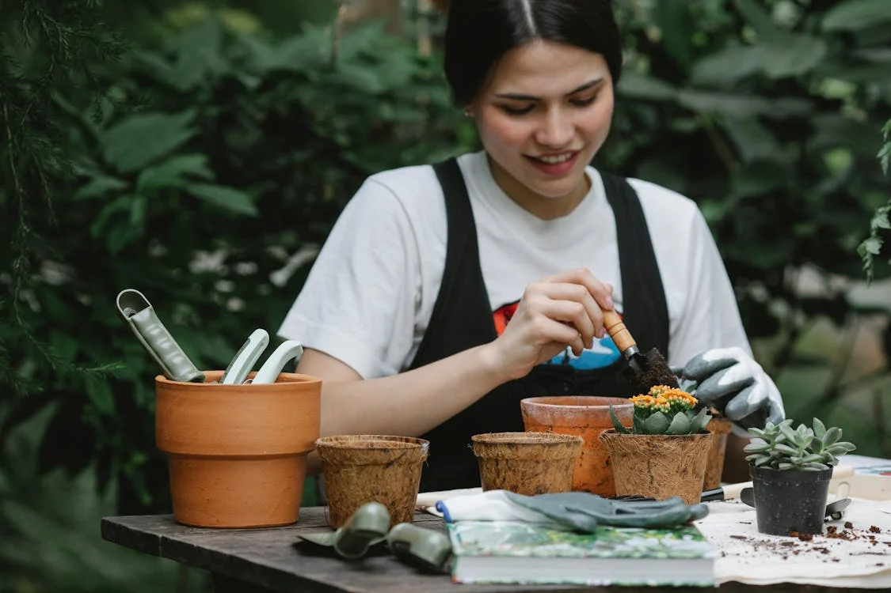
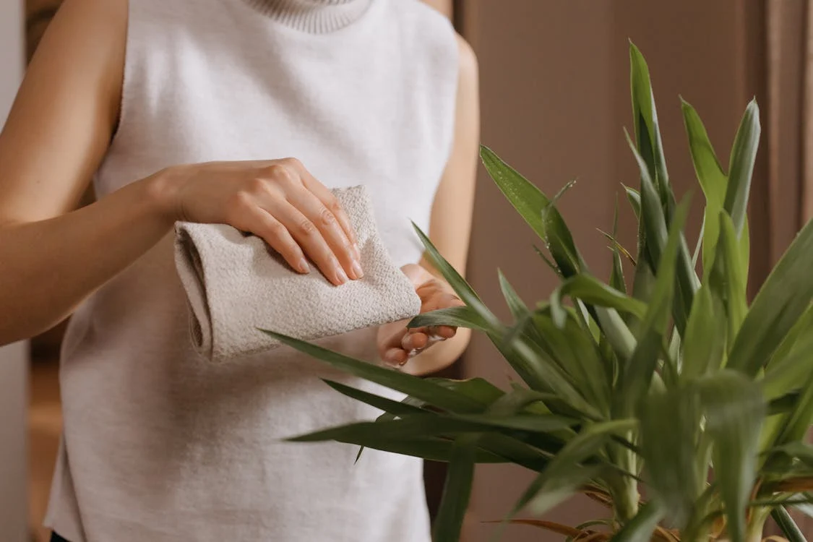
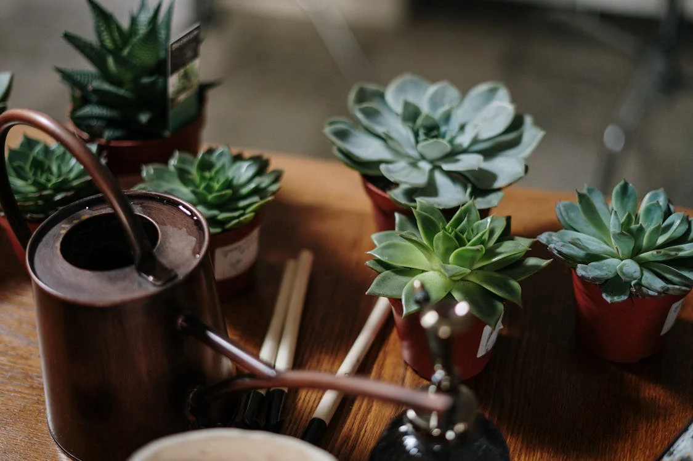
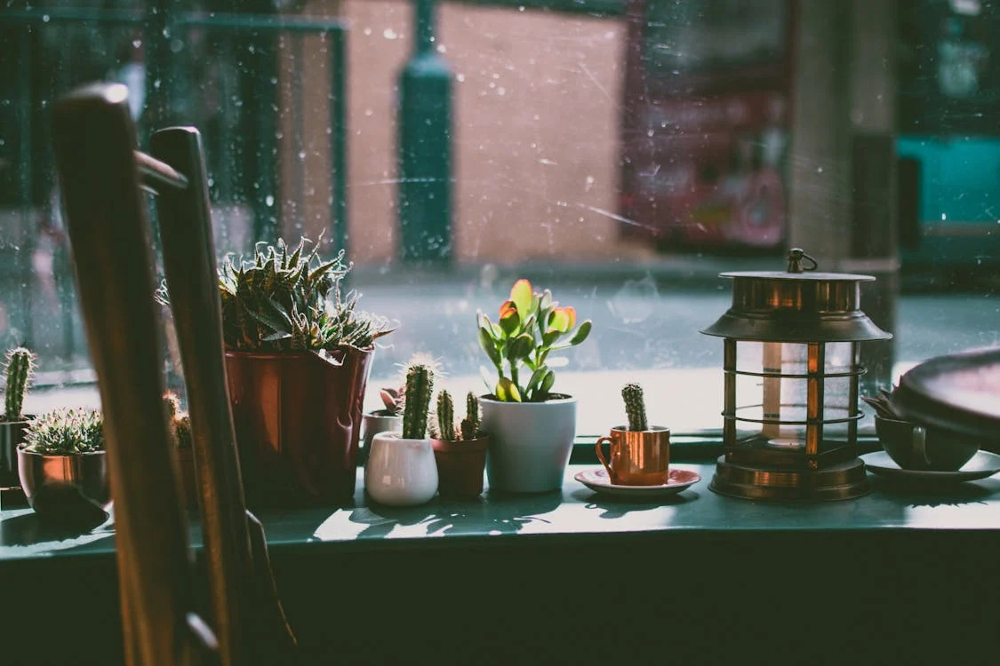

Descubre Más Sobre el Mundo de las Plantas

Cómo hacer compost casero
El compost es un fertilizante natural que mejora la salud del suelo.
Para hacerlo en casa:
- Usa restos orgánicos como cáscaras de frutas, verduras y hojas secas.
- Evita productos lácteos o carnes, ya que generan mal olor.
- Mezcla los residuos en un contenedor con buen drenaje.
- Remueve cada semana y, en unos meses, tendrás compost listo para usar.

Errores comunes al cuidar plantas
Para mantener tus plantas saludables, evita estos errores:
- Regar demasiado: Puede pudrir las raíces.
- No cambiar la maceta: Las raíces pueden quedar apretadas, afectando el crecimiento.
- Ubicación incorrecta: La luz y la ventilación son clave para su desarrollo.
- No limpiar las hojas: El polvo impide que absorban bien la luz.

Luz y ubicación:dónde colocar cada planta
Colocar las plantas en el lugar correcto evitará que sus hojas se quemen o se debiliten por falta de luz.
Cada planta necesita una cantidad de luz diferente:
- Luz directa: Suculentas, cactus y geranios.
- Luz indirecta: Ficus, potos y monsteras.
- Sombra parcial: Helechos, calatheas y zamioculcas.

Cómo regar correctamente tus plantas
El exceso de riego es un error común que puede dañar las plantas.
Aquí algunos consejos:
- Revisa la tierra: Introduce un dedo en la tierra; si está húmeda, espera antes de regar.
- Evita el agua estancada: Usa macetas con agujeros de drenaje.
- Riego según la planta: Cactus y suculentas necesitan poca agua, mientras que helechos y calatheas requieren más humedad.
- Horario ideal: Riega temprano en la mañana o al atardecer para evitar la evaporación rápida.

Plantas de interior fáciles de cuidar
Si eres principiante o tienes poco tiempo, estas plantas son resistentes y fáciles de cuidar.
Aquí algunos consejos:
- Sansevieria (Lengua de suegra): Tolera poca luz y largos períodos sin riego.
- Poto: Crece rápido y se adapta a distintos ambientes.
- Zamioculca: Necesita poca agua y sobrevive en sombra parcial.
- Cactus y suculentas: Ideales para quienes olvidan regar.

Usa piedras en la superficie del sustrato
Colocar una capa de piedras en la tierra no es solo decorativo, también tiene beneficios prácticos.
- Evita la evaporación rápida: Mantiene la humedad por más tiempo.
- Impide que la tierra salpique al regar: Mantiene limpio el entorno.
- Dificulta la aparición de plagas: Como mosquitos del sustrato.
- Mejora el drenaje: Especialmente en suculentas y cactus.
Un detalle simple que mejora la salud y el aspecto de tus plantas.